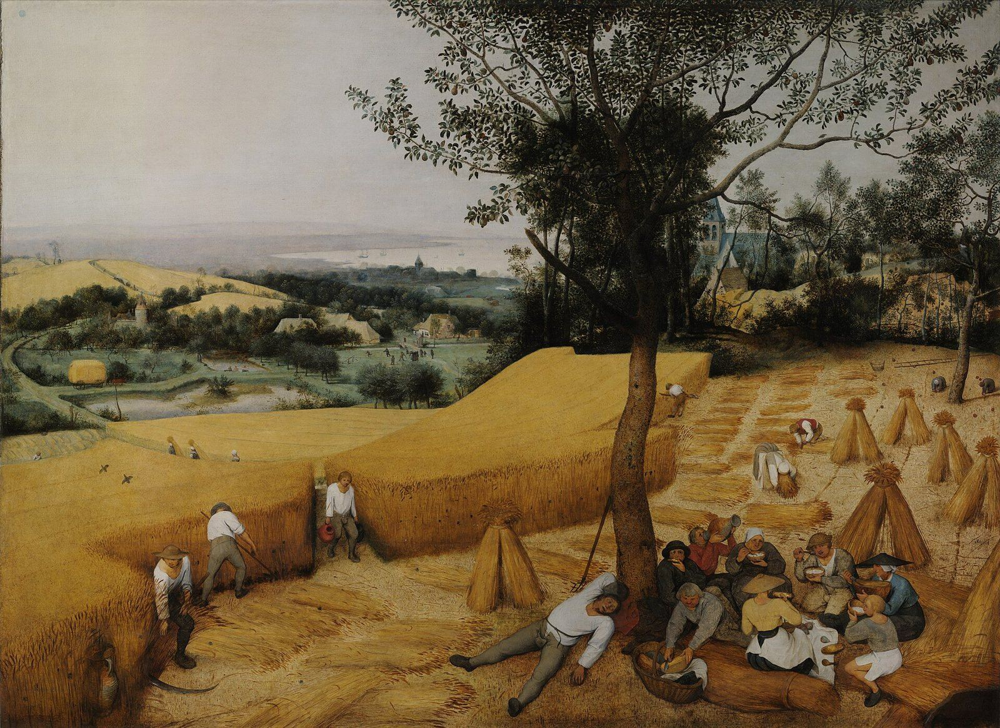

Santiago 5 — La Traducción Mister

⚠ Obreros en la cosecha, segando y luego descansando en el calor del mediodía, la gente del versículo 4, «los obreros que segaron sus campos», cuyo jornal, retenido, «clama».

Notas del traductor
«Vamos ahora, ricos, lloren, aullando por las desventuras que les vienen encima. Su riqueza se ha podrido, y sus ropas se han apolillado». «Vamos ahora» es el comienzo de Santiago 4:13, vuelto ahora contra los ricos, como Jesús vuelve contra ellos el «¡ay de ustedes los ricos» en Lucas 6:24. Ololýzō, «aullar», está en un solo versículo. Talaipōría, «desventura», está en dos versículos, aquí y «ruina y miseria hay en sus caminos» en Romanos 3:16; es el sustantivo de «sean desventurados» en Santiago 4:9 (diccionario). Sḗpō, «podrirse», está en un solo versículo, y también sētóbrōtos, «apolillado», la polilla de «donde la polilla y la carcoma los hacen desaparecer» en Mateo 6:19 (ya en estas páginas) (diccionario). La RV60 dice «¡Vamos ahora, ricos! Llorad y aullad»; la TNM 1987 dice «lloren, aullando por las desdichas que les sobrevienen»; la NVI dice «Se ha podrido su riqueza y sus ropas están comidas por la polilla».
«Su oro y su plata se han oxidado, y su moho será testimonio contra ustedes y comerá sus carnes. Como fuego han atesorado en los últimos días». Katióō, «oxidarse del todo», está en un solo versículo. «Moho» es iós, la misma palabra que el «veneno» de la lengua en Santiago 3:8 y el «veneno de áspides» de Romanos 3:13 (diccionario). Dónde va «como fuego» es cuestión de puntuación: con «comerá sus carnes como fuego», como en la mayoría de las versiones, o con «como fuego han atesorado», como puntúa la edición seguida aquí; las lecturas difieren. El verbo thēsaurízō, «atesorar», está en siete versículos, entre ellos «No acumulen tesoros para ustedes en la tierra» en Mateo 6:19 (ya en estas páginas) y «atesoras para ti mismo ira para el día de la ira» en Romanos 2:5 (diccionario). La RV60 dice «y devorará del todo vuestras carnes como fuego. Habéis acumulado tesoros para los días postreros»; la TNM 1987 dice «Algo semejante al fuego es lo que ustedes han acumulado en los últimos días»; la NVI dice «Se han oxidado su oro y su plata».
«Miren —el jornal de los obreros que segaron sus campos, el cual ustedes han retenido, clama, y los clamores de los que cosecharon han entrado en los oídos de Jehová de los ejércitos». La ley manda pagar al jornalero en su día, «para que no clame contra ti a Jehová, y haya en ti pecado» (Deuteronomio 24:15). Aphysteréō, «retener», está en un solo versículo (diccionario); NA28 y Robinson–Pierpont leen apestērēménos, «defraudado» (el aparato). Amáō, «segar», está en un solo versículo, y también boḗ, «clamor». «Los oídos de Jehová de los ejércitos» es, palabra por palabra, el griego de Isaías 5:9, donde el hebreo dice «en mis oídos, Jehová de los ejércitos» (ambos comprobados). El griego Kyríou Sabaṓth conserva sin traducir el hebreo tsevaot, «ejércitos», y Sabaṓth está en dos versículos; en Romanos 9:29 esta traducción imprime «Jehová de los ejércitos», y así lo hace aquí (diccionario). La RV60 dice «el cual por engaño no les ha sido pagado por vosotros»; la RV 1909 dice «han entrado en los oídos del Señor de los ejércitos»; la TNM 1987 dice «Jehová de los ejércitos»; la NVI dice «del Señor de los Ejércitos».
⚠ «Han vivido en lujos sobre la tierra y entregados a los placeres; han engordado sus corazones en un día de matanza. Han condenado, han matado al justo. ¿No se les opone él?». Trypháō, «vivir en lujos», está en un solo versículo; spataláō, «vivir entregado a los placeres», está en dos versículos, el otro la viuda que «vive entregada a los placeres» en 1 Timoteo 5:6 (diccionario). «Un día de matanza» es la frase del griego de Jeremías 12:3 (aún por llegar en esta traducción, comprobado, junto con el hebreo); sphagḗ, «matanza», está en tres versículos, los otros «Como oveja fue llevado al matadero» en Hechos 8:32 y «como ovejas para el matadero» en Romanos 8:36 (diccionario). Katadikázō, «condenar», está en cuatro versículos, entre ellos «no habrían condenado a los sin culpa» en Mateo 12:7. «El justo» se lee como cualquier pobre justo, como los justos en general, o como Jesús, llamado «el Justo» en Hechos 3:14 y Hechos 7:52; las lecturas difieren. La última frase se imprime como pregunta, como la puntúa la edición seguida aquí, y entonces responde a «Dios se opone a los soberbios» en Santiago 4:6, el mismo verbo; otras ediciones la hacen afirmación, «él no les hace resistencia». La RV60 dice «y él no os hace resistencia»; la TNM 1987 dice «¿No se les opone él?»; la NVI dice «sin que él ofreciera resistencia».
«Tengan paciencia, pues, hermanos, hasta la presencia del Señor. Miren —el labrador espera el precioso fruto de la tierra, teniendo paciencia con él hasta que reciba la lluvia temprana y la tardía. Tengan paciencia también ustedes; fortalezcan sus corazones, porque la presencia del Señor se ha acercado». El verbo makrothyméō, «tener paciencia», literalmente «ser de ánimo largo», está en nueve versículos; es «El amor espera largamente» en 1 Corintios 13:4 y «habiendo esperado con paciencia» en Hebreos 6:15 (diccionario). «Presencia» es parousía, impresa así en Mateo 24:3 y en las cartas de Pablo (diccionario); «fortalezcan sus corazones» es la frase de «para fortalecer sus corazones … en la presencia de nuestro Señor Jesús» en 1 Tesalonicenses 3:13 (diccionario). El griego dice solo «la temprana y la tardía»; «lluvia» se suple, como la escribe Robinson–Pierpont, y la pareja es la «lluvia temprana y la tardía» de Deuteronomio 11:14 (diccionario). Próimos, «temprana», está en un solo versículo, y también ópsimos, «tardía». La RV60 dice «tened paciencia hasta la venida del Señor»; la TNM 1987 dice «hasta la presencia del Señor»; la NVI dice «las lluvias de otoño y primavera».
«No giman unos contra otros, hermanos, para que no sean juzgados. Miren —el juez está de pie ante las puertas». El verbo stenázō, «gemir», está en seis versículos; en otros lugares es «nosotros mismos gemimos por dentro» en Romanos 8:23 y Jesús que «suspiró» en Marcos 7:34 (diccionario). «Para que no sean juzgados» recuerda «Uno es el legislador y juez» en Santiago 4:12. «Ante las puertas» es el «está cerca — a las puertas» de Jesús en Mateo 24:33 y en Marcos 13:29. La RV60 dice «no os quejéis unos contra otros»; la RV 1909 dice «el juez está delante de la puerta»; la TNM 1987 dice «No exhalen suspiros unos contra otros»; la NVI dice «¡El Juez ya está a la puerta!».
«Tomen como ejemplo del sufrimiento y de la paciencia, hermanos, a los profetas que hablaron en el nombre de Jehová». «Ejemplo» es hypódeigma (diccionario). Kakopátheia, «sufrimiento», con su verbo está en cuatro versículos (diccionario), y el verbo vuelve en el versículo 13, «¿Está sufriendo alguno entre ustedes?». «En el nombre de Jehová»: el griego dice kyríou, y los profetas hablaban en el nombre del Dios de Israel, así que esta traducción imprime «Jehová», como también la TNM; Robinson–Pierpont no tiene «en» (el aparato). La RV60 dice «tomad como ejemplo de aflicción y de paciencia a los profetas»; la TNM 1987 dice «que hablaron en el nombre de Jehová»; la NVI dice «tomen como ejemplo de sufrimiento y de paciencia».
⚠ «Miren —llamamos felices a los que perseveraron. Han oído de la perseverancia de Job, y han visto el fin que Jehová trajo, que Jehová es muy compasivo y misericordioso». Makarízō, «llamar feliz», está en dos versículos, el otro el «todas las generaciones me llamarán feliz» de María en Lucas 1:48 (diccionario). «Perseveraron» y «perseverancia» son las palabras de «la prueba de la fe de ustedes produce perseverancia» en Santiago 1:3 y de «el varón que soporta la prueba» en Santiago 1:12 (diccionario). Es el único lugar donde el Nuevo Testamento nombra a Job (buscado); sus palabras son «Jehová dio y Jehová quitó» en Job 1:21, y el libro termina con Jehová bendiciendo «el postrer estado de Job más que el primero» en Job 42:12 (aún por llegar en esta traducción, comprobado) (enciclopedia). «El fin que Jehová trajo» traduce to télos kyríou, «el fin del Señor»: la mayoría lo lee del desenlace que Dios dio a Job, algunos del propósito de Dios, y algunos lectores antiguos del fin de la vida de Jesús (dato referido, no comprobado aquí); las lecturas difieren. Polýsplanchnos, «muy compasivo», está en un solo versículo (diccionario); su raíz es splanchna; «misericordioso» es la palabra de «así como su Padre es misericordioso» en Lucas 6:36, y la pareja recuerda el griego del Salmo 103:8 (102:8 en la numeración griega, comprobado), donde el Señor es oiktírmōn kai eleḗmōn, y «Dios misericordioso y clemente» en Éxodo 34:6. La RV60 dice «y habéis visto el fin del Señor»; la TNM 1987 dice «y han visto el resultado que Jehová dio»; la NVI dice «han visto lo que al final le dio el Señor».
«Pero sobre todo, hermanos míos, no juren, ni por el cielo, ni por la tierra, ni con ningún otro juramento; sino que su sí sea sí, y su no sea no, para que no caigan bajo juicio». El verbo omnýō, «jurar», está en veinte versículos (diccionario). El dicho es el de Jesús en Mateo 5:34 (ya en estas páginas), «no juren en absoluto, ni por el cielo», y Mateo 5:37 (ya en estas páginas), «que su palabra sea “Sí, sí; no, no”»; Santiago lo da en una forma más sencilla. Los lectores difieren sobre si prohíbe todo juramento, también ante un tribunal, o los juramentos ligeros del habla diaria; el estante no lo resuelve. Robinson–Pierpont lee «para que no caigan en hipocresía» (el aparato). La RV60 dice «para que no caigáis en condenación»; la RV 1909 dice «ni por otro cualquier juramento»; la TNM 1987 dice «para que no caigan bajo juicio»; la NVI dice «no juren ni por el cielo ni por la tierra».
«¿Está sufriendo alguno entre ustedes? Que ore. ¿Está alguno de buen ánimo? Que cante alabanzas. ¿Está enfermo alguno entre ustedes? Que llame a los ancianos de la congregación, y que oren sobre él, ungiéndolo con aceite en el nombre del Señor». El verbo euthyméō, «estar de buen ánimo», está en tres versículos, los otros el «tener ánimo» de Pablo en Hechos 27:22 y 27:25 (diccionario). Psállō, «cantar alabanzas», está en cuatro versículos, entre ellos «cantaré con el espíritu» en 1 Corintios 14:15 (diccionario). «Ancianos» es presbýteroi (diccionario), y «congregación» es ekklēsía, impresa así en toda esta traducción (diccionario). Aleíphō, «ungir», está en ocho versículos; los Doce «ungían con aceite a muchos enfermos, y los sanaban» en Marcos 6:13, y se echa aceite sobre las heridas en Lucas 10:34 (diccionario). «En el nombre del Señor» puede nombrar a Dios o a Jesús; esta traducción conserva «Señor», y la TNM imprime «Jehová». Las iglesias católica y ortodoxa leen estos versículos como fundamento de un rito de unción de los enfermos, y otros los leen como oración unida al cuidado del cuerpo (dato referido, no comprobado aquí); las lecturas difieren. La RV60 dice «Llame a los ancianos de la iglesia»; la RV 1909 dice «ungiéndole con aceite en el nombre del Señor»; la TNM 1987 dice «a los ancianos de la congregación»; la NVI dice «Haga llamar a los líderes de la iglesia».
«Y la oración de fe salvará al que está enfermo, y el Señor lo levantará; y si ha cometido pecados, le será perdonado. Así que confiésense unos a otros los pecados, y oren unos por otros, para que sean sanados. La súplica del justo tiene mucha fuerza cuando actúa». Kámnō, «estar enfermo, cansarse», está en dos versículos, el otro «para que no se cansen» en Hebreos 12:3 (diccionario). «Salvar» es sṓzō, que se dice de sanar y de rescatar, como «que puede salvar sus almas» en Santiago 1:21; «levantar» es egeírō, el verbo que se usa también de resucitar. Exomologéō, «confesar», está en nueve versículos, entre ellos las multitudes que iban «confesando sus pecados» en Marcos 1:5 (diccionario). Robinson–Pierpont lee «sus faltas» en lugar de «los pecados» (el aparato). «Cuando actúa» traduce un participio que puede significar «cuando está en acción» o «cuando se la hace actuar»; las lecturas difieren. La RV60 dice «Confesaos vuestras ofensas unos a otros» y «La oración eficaz del justo puede mucho»; la TNM 1987 dice «cuando está en acción, tiene mucho vigor»; la NVI dice «La oración del justo es poderosa y eficaz».
«Elías era un hombre que compartía nuestra naturaleza, y oró una oración para que no lloviera, y no llovió sobre la tierra durante tres años y seis meses. Y oró otra vez, y el cielo dio lluvia, y la tierra hizo brotar su fruto». Homoiopathḗs, «de la misma naturaleza», está en dos versículos, el otro Pablo y Bernabé en Listra, «También nosotros somos hombres que compartimos su naturaleza», en Hechos 14:15 (diccionario). «Oró una oración» conserva la repetición griega, proseuchḗ prosḗuxato, una manera hebrea de recalcar un verbo. El relato de 1 Reyes 17–18 no dice que Elías orara por la sequía; tiene su juramento ante Acab en 17:1 y su postura en el Carmelo, con el rostro entre las rodillas, en 18:42 (comprobado). «Tres años y seis meses» es también la cifra de Jesús en Lucas 4:25, mientras que 1 Reyes 18:1 hace llegar la palabra de Jehová «al tercer año» (comprobado); las lecturas difieren sobre cómo se cuentan las dos (enciclopedia). El verbo bréchō, «llover», está en seis versículos, entre ellos el Padre que «hace llover sobre justos e injustos» en Mateo 5:45 (ya en estas páginas). La RV60 dice «Elías era hombre sujeto a pasiones semejantes a las nuestras»; la RV 1909 dice «y rogó con oración que no lloviese»; la TNM 1987 dice «en oración oró que no lloviera»; la NVI dice «durante tres años y medio».
«Hermanos míos, si alguno de entre ustedes se extravía de la verdad y alguien lo hace volver, sepa que el que hace volver a un pecador del extravío de su camino salvará su alma de la muerte y cubrirá multitud de pecados». «Extraviarse» es el verbo de «No se engañen, hermanos míos amados» en Santiago 1:16 y de la oveja que «se descarría» en Mateo 18:12; «extravío» es su sustantivo. «Hacer volver» es epistréphō, como Juan «hará volver a muchos de los hijos de Israel a Jehová su Dios» en Lucas 1:16 (diccionario); compárese «remienden a tal persona con espíritu de mansedumbre» en Gálatas 6:1. ⚠ De quién es el alma que se salva, la del pecador o la del que lo hace volver, el griego lo deja abierto, y algunas ediciones no tienen «su» (el aparato); las lecturas difieren. Plḗthos hamartiṓn, «multitud de pecados», está en dos versículos; el otro es «el amor cubre multitud de pecados» en 1 Pedro 4:8, y ambos recuerdan el hebreo de Proverbios 10:12, «el amor cubre todas las faltas», donde el griego de Proverbios dice otra cosa (comprobado). De quién son los pecados cubiertos queda abierto del mismo modo. La RV60 dice «salvará de muerte un alma, y cubrirá multitud de pecados»; la RV 1909 dice «Sepa que el que hubiere hecho convertir al pecador»; la TNM 1987 dice «salvará su alma de la muerte»; la NVI dice «lo salvará de la muerte».
El fin de la carta. Santiago se detiene aquí, sin saludos, sin nombres y sin despedida; la última palabra del griego es «pecados». La carta se abrió con «Ténganlo por sumo gozo … cuando caigan en diversas pruebas» en Santiago 1:2 y se cierra con un hermano traído de vuelta de su extravío.
Patrones que vale la pena recordar
Donde esta traducción conserva las palabras exactas: «Vamos ahora», como en 4:13; «desventuras», el sustantivo de 4:9; «moho», la misma palabra que el «veneno» de 3:8; «atesorar», como en Mateo 6:19; «Jehová de los ejércitos», como en Romanos 9:29; «entregados a los placeres», como en 1 Timoteo 5:6; «han matado», como en 4:2; «presencia», como en Mateo 24:3; «fortalezcan sus corazones», como en 1 Tesalonicenses 3:13; «la lluvia temprana y la tardía», como en Deuteronomio 11:14; «perseverancia», como en 1:3; «llamar feliz», como en Lucas 1:48; «Jehová» en los versículos 4, 10 y 11, y «el Señor» en los versículos 7, 8, 14 y 15; «congregación»; «que compartía nuestra naturaleza», como en Hechos 14:15; «oró una oración»; y «extraviarse».
Ecos cumplidos. «Vamos ahora» de Santiago 4:13; las desventuras de Santiago 4:9; el moho, el veneno de Santiago 3:8; oponerse de Santiago 4:6; el juez de Santiago 4:12; la perseverancia de Santiago 1:3 y Santiago 1:12; la oración después del «piden mal» de Santiago 4:3; salvar de Santiago 1:21; extraviarse de Santiago 1:16; los ricos de Santiago 1:10 y Santiago 2:6; y la congregación, después de la «sinagoga» de Santiago 2:2.
La carta en conjunto. Santiago escribe «a las doce tribus que están en la Dispersión» (Santiago 1:1) y no nombra ninguna ciudad ni ningún compañero del que escribe. Avanza por dichos breves más que por un solo argumento, y sus palabras recurrentes («perseverancia», «perfecto», «de doble alma», «hacedores», «los ricos», «la lengua», «la sabiduría de lo alto») se imprimen del mismo modo en todos los capítulos de esta traducción.
Lo siguiente en este libro: ninguno; Santiago termina aquí.